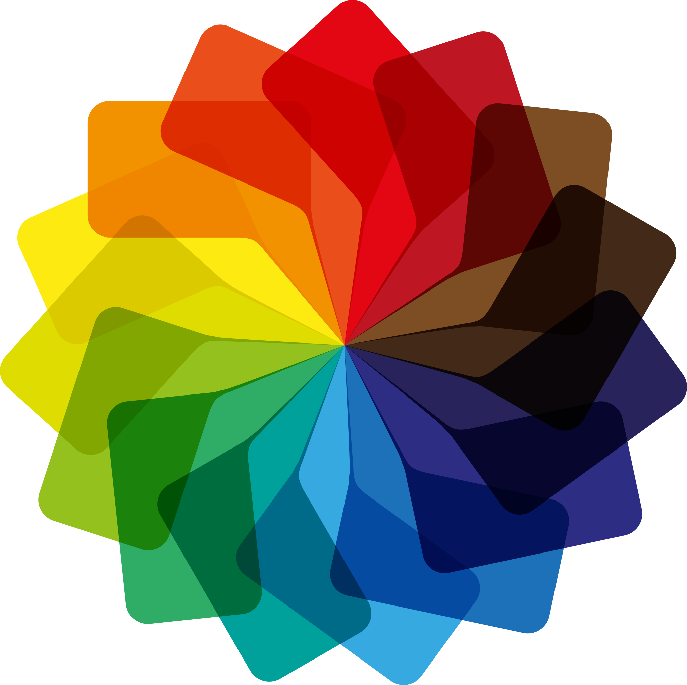

Generador de Paletas de Colores
Encuentre colores de marca y estado con un generador de colores diseñado para crear combinaciones de colores armoniosas para el diseño de UI.
Ejemplo Visual
Te brindamos una representación real de como se vería tu paleta de colores en un entorno real.

Fundamentos de la teoría del COLOR
La teoría del color es un conjunto de reglas y principios básicos que rigen la mezcla, combinación y percepción de los colores, sirviendo como guía para artistas, diseñadores y creadores para generar armonía y evocar emociones.
Más información¿Necesitas un Profesional?
Si deseas llegar a un resultado mucho más elaborado, puedes contactarte con un profesional y darle identidad a tu marca.
ContactoPreguntas Frecuentes
¿Cómo funciona el generador de paletas?
ColorFly utiliza un sistema de generación automática de colores basado en combinaciones armónicas. Cada vez que presionas “Generar”, se crean colores equilibrados visualmente que pueden utilizarse en diseños web, branding o redes sociales. También puedes bloquear colores específicos para mantenerlos mientras se generan nuevos.
¿Por qué debería contactar a un profesional de ColorFly?
El generador es una herramienta poderosa para crear paletas rápidamente, pero un profesional puede ayudarte a desarrollar una identidad visual coherente, estratégica y alineada con los valores de tu marca. Si necesitas algo más personalizado y pensado para destacar en el mercado, contar con asesoría profesional puede marcar la diferencia.
¿Cómo puedo descargar una paleta?
Simplemente haz clic en el botón “Descargar” después de generar tu paleta. El sistema exportará los códigos de color para que puedas utilizarlos fácilmente en tu software de diseño o desarrollo.
¿Cuál es la diferencia entre HEX y HSL?
HEX y HSL son dos formatos para representar colores en diseño digital. HEX utiliza un código hexadecimal como #FF5733 basado en valores de rojo, verde y azul (RGB), y es muy común en desarrollo web. HSL, en cambio, describe el color según su tono (Hue), saturación y luminosidad, lo que lo hace más intuitivo para ajustar y crear variaciones de un color.